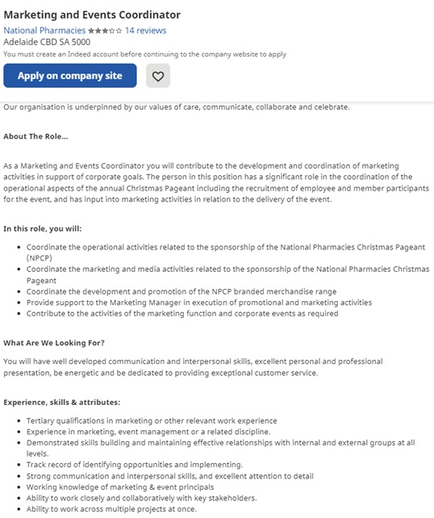
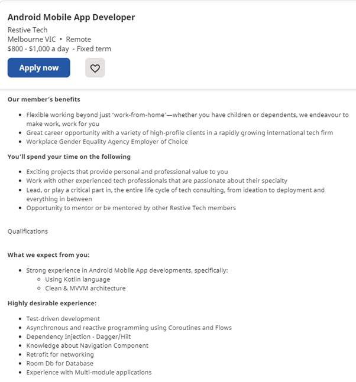
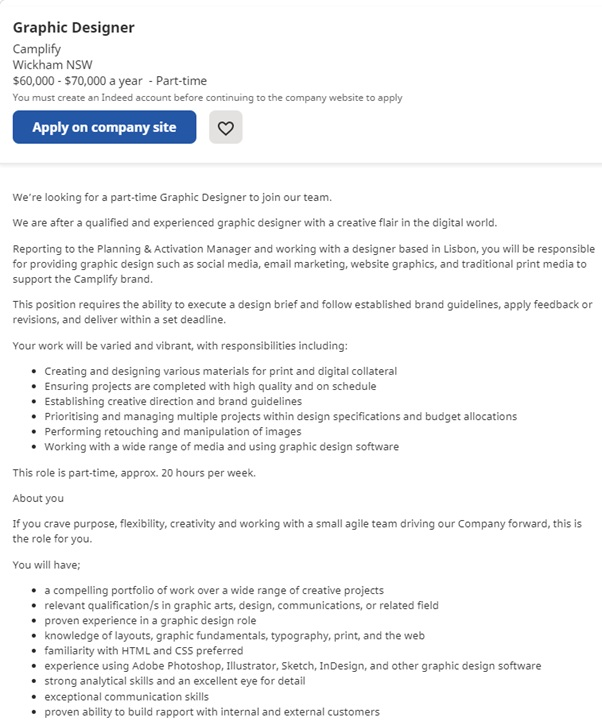
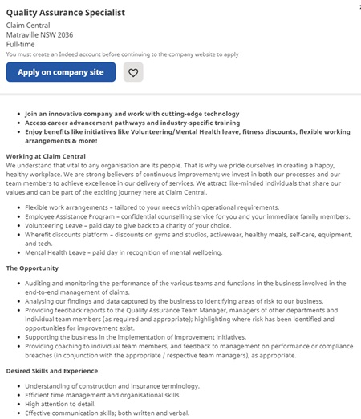

Besides the role of Project Manager there are other roles required to build a successful app development team (Yaskevich, 2017).
Sales/Marketing Co-ordinator:
A Sales and Marketing Co-ordinator must plan and deliver a marketing plan for the Versatile Fitness app and the company. This would usually include:
• the implementation of a social media plan which would include a schedule for release of content.
• Overseeing the production of any marketing endorsements.
• Providing reports and analytics on marketing activity.
• Planning events relating to the company or app.
Generally, at least a few years of experience in a marketing role is required as well as experience with social media platforms. There are no set requirements
as far as higher education goes for this role.
Employment advert example per Figure 1.1:

Figure 1.1
Mobile Application Developer:
An experienced Android Mobile Application Developer would be required to help develop clean, sustainable code for new features and updates on the existing
app and any future Android applications. They would:
• Work with the product team to build new features for customers.
• Work with the Quality Assurance team to analyse and resolve any issues or errors.
• Work with the Release Engineering team in app deployment activities.
• Work with the Design team to incorporate clean graphics and designs.
• To perform test cases as part of any new features.
Skills or qualifications generally required would be:
• A Bachelor’s degree in Computer Science/Engineering or similar.
• Experience as an Android Developer with knowledge of with Android user experience, with the ability to design and realise Android apps.
• Knowledge of Java and Kotlin.
• The ability to effectively communicate across teams and roles while working in a collaborative environment.
• Demonstrable the ability to deliver projects on time and within budget.
Employment advert example per Figure 1.2:

Figure 1.2
Graphic Designer:
A Graphic Designer would work with the project team to determine visual design expectations and preferences. The role would need the following requirements:
• Design graphics with original colours and fonts.
• Provide design concepts to the project team for brainstorming and approval in a timely manner and editing those designs if required.
• Developing design prototypes to incorporate logos and images to social media and any other products or platforms.
Skills or qualifications generally required would be:
• Bachelor’s or associate degree in graphic design, visual arts, or similar.
• 2-3 years of experience as a visual designer, or similar.
• A complete portfolio of visual design examples.
• Proficiency in visual design software, such as Adobe Creative Suite's InDesign, Photoshop, and Illustrator.
• May require knowledge of programming languages such as Kotlin and Java.
• Experience in meeting deadlines.
• Ability to work with a team on visual design projects, integrate feedback and determine design ideals.
• Excellent communication skills.
Employment advert example per Figure 1.3:

Figure 1.3
Quality Assurance Specialist:
A Quality Assurance Specialist would be required create and manage a quality planning strategy to identify any problems with the app. They would have to
suggest any solutions to any issues found. No higher education would be required with this job, but it is obviously an advantage.
They would be required to:
• Manage continuous improvement projects.
• Identify key KPIs for product quality.
• Prepare and present reports of current data to Senior Management.
Employment advert example per Figure 1.4:

Figure 1.4
Additional positions required would be additional App Developers, possibly with program languages across multiple platforms such as Swift for iOS, to further expand the app release. Additional members of the design team may also include Content Developers and Navigation Developers. These roles, in addition to the Graphic Designer would create the visual aspects of the functionality of the app, in conjunction with feedback from the Project Manager and the rest of the team.